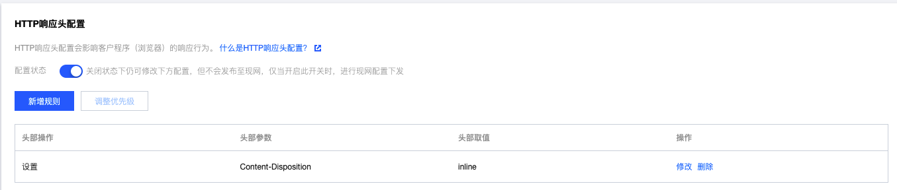
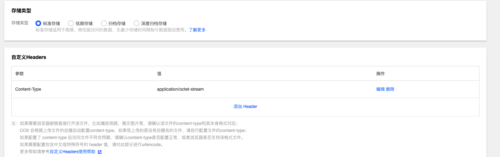

腾讯云COS静态网站网页访问提示下载问题排查
起因
最近前端想把腾讯云nginx上的静态网站切换到腾讯云COS，建桶上传文件，打开页面就提示下载文件。
问题处理
网上查到很多人遇到这个问题，在CDN里加一个HTTP Header解决了，于是操作之。

兴冲冲打开页面，结果还是提示下载文件，这下没有了头绪。
一通排查，后来通过curl -I查看URL返回的头，发现了问题
1 | HTTP/2 200 |
返回的头部中content-type竟然是application/octet-stream。
于是去COS页面查看文件属性，结果：

application/octet-stream在RFC 2046[1]中这样定义的：
1 | The "octet-stream" subtype is used to indicate that a body contains |
任意二进制数据文件，通常只用于文件下载时使用，把该header删除，再访问，这下可以在页面中打开了。
问上传文件的开发，他使用的第三方工具上传的，经检查，所有的文件都加的一样的Header, content-type=application/octet-stream。
删除所有文件，改用腾讯云自身的工具后检查文件信息，不同类型的加上的是各自对应的Header。
访问一切正常，问题搞定。
腾讯云COS静态网站网页访问提示下载问题排查